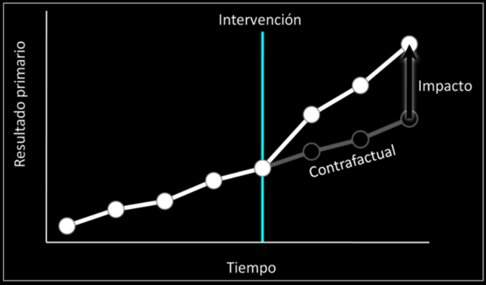
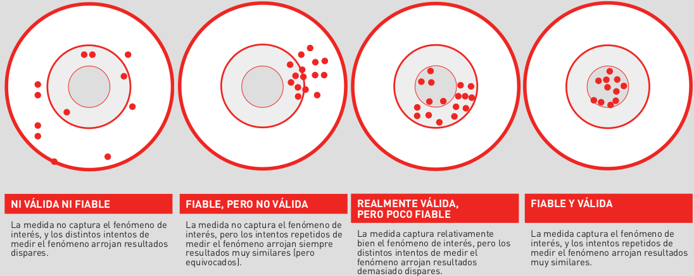
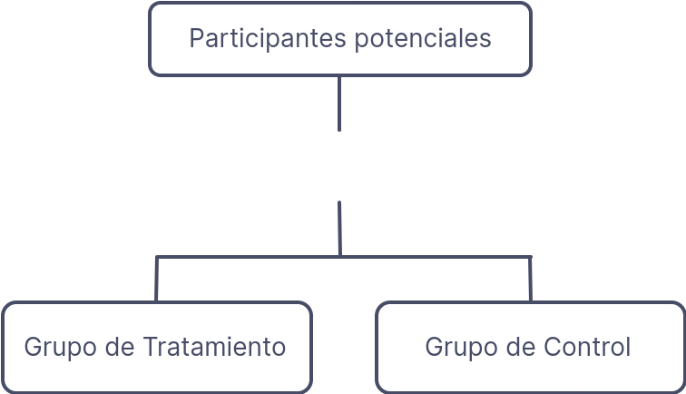
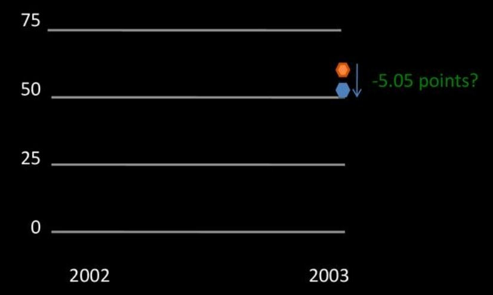
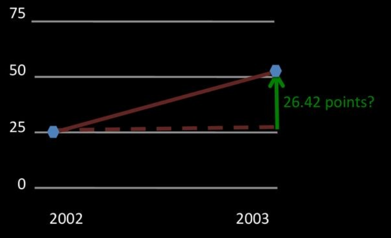
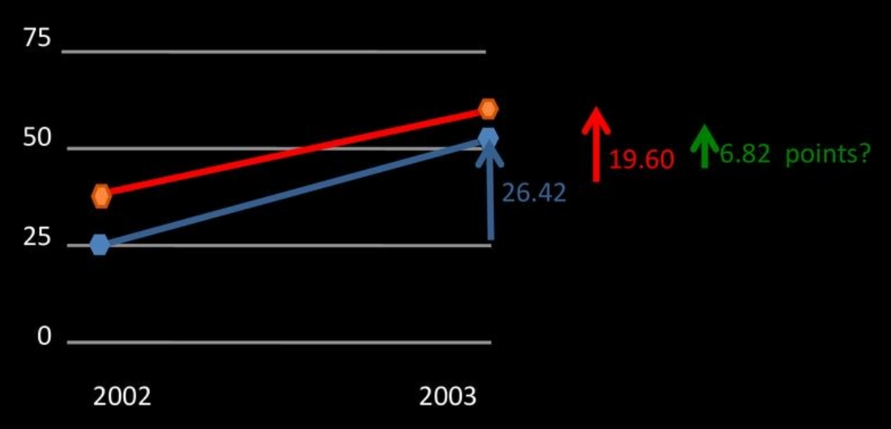
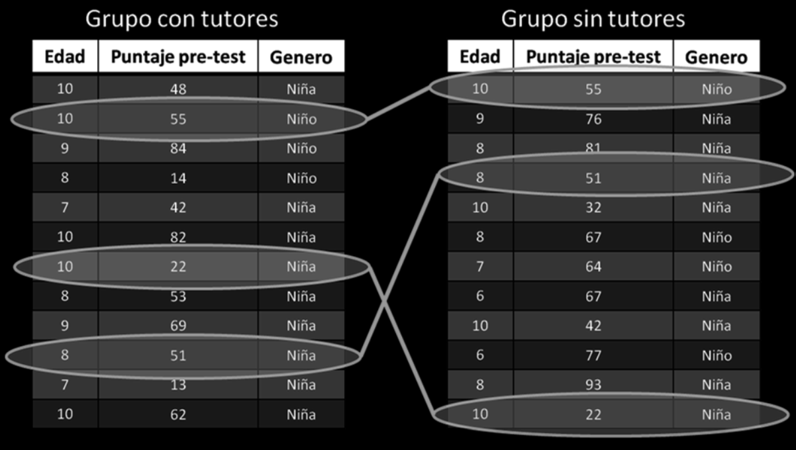
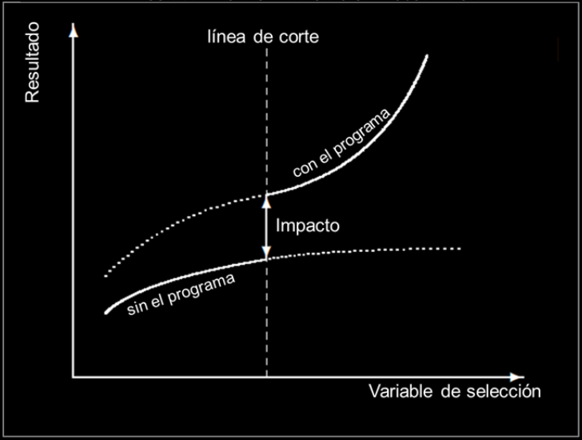
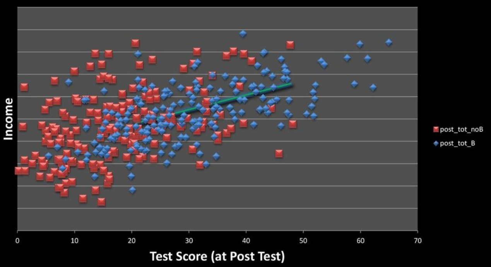

>
<section data-background-image="img/impacto/background.jpg" data-background-size="100%"> #### Programa de capacitación en políticas públicas ### Introducción a los métodos de evaluación de impacto ###### [Lic. Matías Grandi](mailto:matiasgrandi@gmail.com) <small><b><center>Legislatura de la Ciudad Autónoma de Buenos Aires</center></b></small> </section> --- #### Programa de capacitación en políticas públicas ### Introducción a los métodos de evaluación de impacto ###### [Lic. Matías Grandi](mailto:matiasgrandi@gmail.com) ###### <small><b><center>Octubre de 2022<br> Legislatura de la Ciudad Autónoma de Buenos Aires</center></b></small> <!-- </center><small>Puede seguir la presentación en <a href='https://matiasgrandi.github.io/impacto.html'>https://matiasgrandi.github.io/impacto.html</a></small><center> --> --- ## ¿Qué es evaluación de impacto? -- #### ¿Qué es evaluación de impacto? **Objetivo**: Medir impacto causal. **Ejemplo**: Impacto de las notificaciones por incumplimiento de AFIP (causa) sobre recaudación (efecto) **Problema**: Sólo se puede medir lo que ocurrió, no lo que hubiera ocurrido sin el programa. <aside class="notes"> Se quiere medir el impacto de un programa o una política en alguna variable de interés. Ejemplo: - cuál es el impacto de una notificación en las rectificaciones de impuestos. - clases adicionales para estudiantes de colegio sobre la nota - capacitación en oficios sobre el empleo </aside> -- #### ¿Qué es evaluación de impacto? Lo que hubiera pasado sin el programa se llama **<text style="color:yellow">contrafactual</text>** Cada evaluación intenta construir la estimación del contrafactual de la mejor manera posible. -- #### ¿Qué es evaluación de impacto?  <small> <b>Impacto: Diferencia entre resultado observable (negro) y el contrafactual nunca observado (gris)</b> </small> -- #### ¿Qué es evaluación de impacto? La estimación del contrafactual se representa con un grupo que se denomina el **<text style="color:yellow">grupo de control o de comparación</text>** -- #### ¿Qué es evaluación de impacto? **Grupo de control**: personas que no participan en el programa, cumpliendo los requisitos para hacerlo. **Grupo de tratamiento**: personas que participan en el programa. **Impacto**: comparación entre _GC_ y _GT_ Si _GC_ y _CT_ son iguales en todas sus características (observables y no observables), salvo en una (participación en el programa) la diferencia entre GC y GT son debido al programa. -- #### ¿Qué es evaluación de impacto? Distintos métodos para medir impacto: - Métodos experimentales - La regla de oro en métodos de evaluación - Métodos no-experimentales - Pre-post (_before-after_) - Diferencia simple - Diferencias en diferencias - Matching y PSM --- ## Resultados (_outcomes_) -- #### ¿Qué medimos? La definición de los _outcomes_ con los que mediremos el impacto debería derivarse de forma bastante directa de los objetivos del programa, ya sean los declarados formalmente o los identificados en la elaboración de la teoría del cambio de la intervención. <aside class="notes"> si el objetivo de un programa es la reducción de la siniestralidad en las carreteras, parece que la definición de los outcomes debería capturar de la mejor manera posible el fenómeno de la siniestralidad en las carreteras. Sin embargo, la tarea de identificar los outcomes y la forma de medirlos raramente es directa y suele precisar de la toma de algunas decisiones sobre qué, cómo y cuándo medir </aside> -- #### ¿Qué medimos? - Objetivos múltiples: Debemos elegir que queremos evaluar. - Objetivos multidimensionales, incluso las manera de medir impacto pueden ser multiples. - Impactos especialmente difíciles de medir: Objetivos intangibles -- #### ¿Cómo medimos? - Escoger una medida preexistente, implica que alguien ya ha comprobado su fiabilidad y facilita la posterior comparación de resultados con otras evaluaciones. - El esfuerzo de localizar una medida válida es menor el de desarrollar y hacer pruebas con una nueva. -- #### ¿Cómo medimos? Fiabilidad de la medida  -- #### ¿Cuándo lo medimos? - Distintos momentos de medida pueden conducir a conclusiones diferentes - No se puede hablar de corto o largo plazo. Se necesita exactitud, plazos de tiempo. <aside class="notes"> Algunos impactos implican procesos lentos y pueden tardar en producirse, otros pueden ocurrir rápidamente, pero no mantenerse en el tiempo. </aside> --- ## Validez de las conclusiones -- #### Validez de las conclusiones - Validez interna - Validez externa -- #### Validez interna _«verdad relativa» de una inferencia causal, es decir, robustez con que se concluye que el programa es el agente responsable de los impactos observados._ -- #### Validez interna En cada evaluación, diremos que el diseño metodológico es más o menos válido en tanto que descarte convincentemente las siguientes explicaciones alternativas. ⬇ -- #### Validez interna - Historia/factores contemporáneos: acontecimientos que suceden durante la implementación del programa y que pueden influir sobre los outcomes - Sesgo de selección: se produce cuando existe, desde antes del programa, alguna diferencia entre los participantes y el grupo de comparación que puede ser potencialmente responsable de las diferencias en _outcomes_ <aside class="notes"> - historia: programa de atención a las personas sin techo, las variaciones en el mercado de trabajo, la puesta en marcha de un programa de salud mental y los cambios en el control de la inmigración formaban parte de la historia del programa, ya que se producían al mismo tiempo que este e incidían sobre el número de personas que pernoctan en la calle (la medida del outcome), motivo por el cual podrían ser parcialmente responsables de los cambios observados y, por tanto, ser confundidos con el impacto del programa. - Sesgo de selección: programa de refuerzo lingüístico en catalán en el que se proporciona formación en lengua catalana solamente a los inmigrantes recién llegados que lo soliciten, con el objetivo final de facilitarles la inserción laboral. Es muy posible que los que se apunten sean distintos de los que no lo hagan en características relevantes para la inserción laboral: que su nivel educativo sea superior, que dominen mejor el castellano o que tengan más motivación para encontrar un trabajo </aside> -- #### Validez interna - Desgaste diferencial de la muestra (_attrition_): cuando exista gente que abandana el programa, cambiando la composición de los grupos en alguna característica y pueda generar resultados no vinculados al programa. - Regresión a la media: tendencia estadística que tienen los resultados extremos que se producen en un determinado momento de medida de los _outcomes_ a acercarse a la media de la población cuando vuelven a ser medidos un tiempo después. <aside class="notes"> - attrition: un programa destinado a prevenir recaídas en ex alcohólicos, los que mejor se encuentran y más seguros están de no recaer tienden a abandonarlo antes de su finalización porque lo consideran innecesario, y se les pierde la pista. En este caso, el grupo de participantes acaba estando compuesto por aquellos con un mayor riesgo de recaída. El grupo CT, sigue balanceado. - Regresión a la media: muchos fenómenos implican cierta variación aleatoria: por ejemplo, a un fin de semana con muchos accidentes de tráfico suele sucederle otro con un número inferior, aunque las circunstancias que determinan la propensión a los accidentes (el clima, el volumen de tráfico, etc.) no hayan variado </aside> -- #### Validez interna - Efectos de los test: realizar un test a participantes y miembros del grupo de comparación antes del programa (pretest) y después (postest), con la finalidad de poder estimar cuál ha sido el impacto de la intervención. - Efecto Hawthorne: incremento del outcome que experimentan las personas por el mero hecho de que alguien les presta una atención especial, y no tanto por el efecto del programa en sí. <aside class="notes"> - Efectos de los test: si el test consiste en hacer pruebas de colesterol, puede ser que las personas cuiden más su dieta porque saben que les volverán a medir. - Efecto Hawthorne: una serie de estudios realizados entre los años 1927 y 1932 en los que se observó que los trabajadores de una planta eléctrica aumentaban su productividad cuando tenían la sensación de que la dirección se preocupaba por ellos, independientemente de la forma que tomara dicha atención. </aside> -- #### Validez interna - Maduración: cambio natural o crecimiento debido al mero paso del tiempo. - Efectos de los instrumentos: Si se produce un cambio en el instrumento empleado para medir los outcomes en el pretest y en el postest, la variación en los outcomes puede reflejar los efectos de este cambio técnico en el sistema de recogida de datos y puede con fundirse fácilmente con los impactos del programa. <aside class="notes"> - Maduración: a mejora de las capacidades cognitivas de los niños, el temperamento de los comportamientos de riesgo de los adolescentes o el empeoramiento de la autonomía personal de las personas mayores son fenómenos que se producirán entre el pretest y el postest por efecto de la maduración - Efecto de los instrumentos: Es una amenaza frecuente cuando la evaluación hace un seguimiento de series temporales largas o cuando la medida depende de una valoración relativamente subjetiva que puede ir cambiando a lo largo del tiempo como, por ejemplo, la apreciación del grado de desestructuración de una persona sin techo en el momento de entrar al sistema. </aside> -- #### Validez interna - Externalidades (_spillovers_): cuando los no participantes pueden absorber los beneficios del programa de forma indirecta, a menudo por el hecho de estar en contacto con los participantes -- #### Validez Externa _Grado en que las conclusiones de una evaluación pueden ser generalizadas a otros programas similares, momentos o lugares más allá de los propios de la misma evaluación._ <aside class="notes"> cuanto más artificiales y controladas sean las condiciones del programa para facilitar la evaluación, menos plausible resulta pensar que estas condiciones se reproducirán en un programa similar que no esté sujeto a la evaluación </notes> -- #### Validez de las conclusiones Cuanto más **<text style="color:yellow">artificiales y controladas</text>** sean las condiciones del programa para facilitar la evaluación, menos plausible resulta pensar que estas condiciones se reproducirán en un programa similar que no esté sujeto a la evaluación --- ## Método experimental -- #### Método experimental - Construye un grupo de control de máxima calidad. No hay diferencias entre _GC_ y _GT_. Resuelven el problema de sesgo de selección - Requiere que la evaluación se prepare **<text style="color:yellow">antes</text>** de lanzar el programa -- #### Método experimental  -- #### Método experimental - Ley de los grandes números (LGN): cuando hay suficientes personas en cada grupo, una asignación aleatoria genera dos grupos que se parecen en todas las **<text style="color:yellow">características observables</text>** (como educación), y **<text style="color:yellow">no observables</text>**, (como motivación). <aside class="notes"> La estratificación se recomienda cuando el número de participantes potenciales es pequeño, y en general para asegurarse que los dos grupos sean equilibrados con respeto a las variables más importantes. En la estratificación, se divide la muestra en sub grupos con característica similares y se aleatoriza dentro de cada subgrupo. Por ejemplo, si se divide la población por género y se asigna 30% de los hombres y 30% de las mujeres al tratamiento, la asignación será perfectamente equilibrada por género. El grupo de tratamiento tendría la misma composición de género que el grupo de control. -- #### Método experimental ¿Número requerido de participantes en cada grupo? Según LGN mientras más individuos estén en el estudio más probable es que los dos grupos serán parecidos. **<text style="color:yellow">Importancia del tamaño de muestra</text>**. <aside class="notes"> Un mayor tamaño siempre es mejor porque reduce la probabilidad de que, por casualidad, se obtengan grupos desbalanceados. Sin embargo, un estudio de mayor tamaño puede ser más costoso y no siempre es factible </aside> -- #### Método experimental - Más alta es la **<text style="color:yellow">varianza de la variable dependiente</text>** más observaciones son necesarias para poder detectar un efecto estadísticamente significativo. - Mas **<text style="color:yellow">pequeño es el efecto</text>** que se quiere medir, más grande es el número de participantes requerido. - Diseño de la aleatorización: Si se aleatoriza a **<text style="color:yellow">nivel de grupos (diseño conglomerado)</text>**, se requieren mas observaciones que si la aleatorización es a nivel individual. <aside class="notes"> Si se aleatoriza a nivel de grupos (diseño conglomerado), por ejemplo todas las empresas de un mismo contador juntas, se requiere más empresas que si la aleatorización es a nivel individual. </aside> -- #### Método experimental - Determinado _n_, se avanza al proceso de asignación aleatoria. Los grupos **<text style="color:yellow">deben estar balanceados</text>** con respeto a las principales variables de interés. - Tabla de balance, para mostrar que las principales características son parecidas en los dos grupos. - Se recomienda prueba piloto, para evitar problemas en la implementación. <aside class="notes"> Durante la implementación es importante asegurarse que se respete la asignación aleatoria y que no se cambien participantes de un grupo a otro.2 Lo más importante en este proceso es asegurarse que no haya ninguna otra diferencia entre el grupo de tratamiento y el grupo de control salvo la aplicación del programa. Por ejemplo, se perdería la validez del estudio si se detienen las otras actividades fiscalizadoras en el grupo de control pero se siguen aplicando en el grupo de tratamiento o al revés <aside> -- #### Método experimental - **Ventajas**: La estimación del impacto del programa es muy creíble cuando se diseñó e implementó correctamente. - **Desventajas**: Requiere la asignación aleatoria antes del programa por lo que usualmente no se pueden hacer evaluaciones retrospectivas. El tamaño de la muestra debe ser lo suficientemente grande para poder detectar un resultado significativo. -- #### Método experimental El uso de experimentos es la mayor revolución en economía empírica de la década. Ver, por ejemplo, Duflo, E., Glennerster, R. and Kremer, M.(2006) -- #### Método experimental ##### Pasos prácticos para un experimento Supongamos que deseamos evaluar el impacto de dar laptops a niños de escuelas primarias en zonas rurales. Las laptops aún no han sido repartidas y nos dan la oportunidad de diseñar el estudio. ¿Qué necesitamos? -- #### Método experimental ##### Pasos prácticos para un experimento 1. Escoger un programa y una población de interés, y las principales variables de interés. 2. Cálculos de poder estadístico: Determinar el tamaño requerido de los grupos de tratamiento y de control, para tener una buena probabilidad de medir los impactos en las variables de interés. 3. Asignación aleatoria al tratamiento. Verificar que la asignación resultó equilibrada con respeto a las principales variables de interés. -- #### Método experimental ##### Pasos prácticos para un experimento 4. Piloto: implementación del programa a pequeña escala para evitar problemas inesperadas (es si posible). 5. Implementación: Asegurarse no haya ninguna otra diferencia entre _GT_ y _GC_. --- ## Métodos no experimentales -- #### Métodos no experimentales **Programa a evaluar**: Balsakhi Remedial Tutoring en Vadodara y Mumbai, India <aside class="notes"> Tenemos resultados para este programa en algunos de los métodos. Vamos a agregar otros métodos que no se usaron en este programa, aunque no haya resultados. </aside> -- #### Métodos no experimentales **Contexto**: 44% de los niños entre 7 y 22 años de la India no podían leer un párrafo simple y el 50% no podía realizar una operación de resta, a pesar que la mayoría estaba escolarizado. -- #### Métodos no experimentales **Detalles**: En 122 escuelas públicas en Vadodara y 77 en Mumbai, un tutor (**<text style="color:yellow">balsakhi</text>**), trabaja con los niños de 2º, 3º y 4º grado que presentan complicaciones en el aprendizaje respecto a sus compañeros. -- #### Métodos no experimentales Métodos no experimentales utilizados y no utilizados para evaluar Balsakhi: 1. Pre-post (_before-after_) 2. Diferencia simple 3. Diferencias en diferencias 4. Regresiones simples o multivariadas 5. Experimentos aleatorios -- #### Diferencia Simple (Tratados vs no tratados) > Comparación de resultados entre el grupo que recibió el programa y un grupo de control que no lo recibió -- #### Diferencia Simple (Tratados vs no tratados) - Método más simple - El grupo de control debería representar lo que hubiera pasado con el grupo de tratamiento sin el programa (supuesto dificil de cumplir) - Si la asignación no es aleatoria, tenemos **<text style="color:yellow">sesgo de selección</text>**. <aside class="notes"> Si comparamos las notas de los niños que recibieron la ayuda de un tutor con los que no la recibieron es posible que se observe que los niños con tutores tienen notas más bajas que los niños sin tutores. Concluir en base a esta observación, que los tutores hicieron daño al logro escolar de los niños muy probablemente sería erróneo. Lo más probable es que hubo una selección inicial en la cual niños con notas más bajas tenían mayor probabilidad de recibir la ayuda de un tutor. En este caso, el sesgo de selección introduce una subestimación del impacto tan fuerte que el impacto parece negativo en lugar de positivo. </aside> -- #### Diferencias simples Ejemplo: - El programa se desarrolla en etapas, dejando un cohorte para comparación, aunque la asignación del programa no es aleatoria. - El programa se desarrolla por áreas geográficas diferentes (localidades, provincias, etc). Problemas: - No toma en cuenta diferencias previas al tratamiento (sesgo de selección) -- #### Diferencias simples Comparando resultados en los examenes de niños que tuvieron acceso al balsakhi contra los que no lo tuvieron ||| |---|---| |Resultado promedio para niños con balsakhi|51.22| |Resultado promedio para niños sin balsakhi|56.27| |<text style="color:yellow">Diferencia</text>|<text style="color:yellow">-5.05</text>| <aside class="notes"> Es peor el resultado con balsakhi, fundamentalmente porque son los peores alumnos, no porque el programa no sirve. </aside> -- #### ¿bajo que condiciones la diferencia (-5.05) puede ser interpretada como el impacto del programa? -- #### Diferencias simples ##### ¿Qué hubiese pasado sin el programa?  <center><small><b>¿Impacto -5.05 puntos?</b></small></center> -- #### Pre-Post (Before-after) > es un tipo particular de evaluación de diferencia simple. En lugar de tomar otro grupo de personas como grupo del control se usa el mismo grupo de personas antes del comienzo del programa <aside class="notes"> mide el cambio en el tiempo tomando en cuenta el estado inicial del grupo. En este caso, se mide el impacto como la diferencia entre la situación anterior y la situación posterior a una interven‐ ción. </aside> -- #### Pre-Post (Before-after) ¿es correcto suponer que sin el programa, durante este periodo no se hubiera dado ningún cambio en los resultados del grupo tratado? <aside class="notes"> mide el cambio en el tiempo tomando en cuenta el estado inicial del grupo. En este caso, se mide el impacto como la diferencia entre la situación anterior y la situación posterior a una intervención. ¿Es creíble asumir que en los 2 años del programa, los niños no hubieran mejorado sus notas sin los tutores? </aside> -- #### Pre-Post (Before-after) ||| |---|---| |Score promedio post-test p/ niño con balsakhi|51.22| |Score promedio pre-test p/ niño con balsakhi|24.80| |<text style="color:yellow">Diferencia</text>|<text style="color:yellow">26.42</text>| ||| ##### ¿Bajo que condiciones esta diferencia (26.42) puede ser interpretada como el impacto del programa? -- #### Pre-Post (Before-after)  <center><small><b>¿Impacto 26.4 puntos?</b></small></center> -- #### Pre-Post (Before-after) Problemas: - No tiene en cuenta la tendencia temporal - Choques <aside class="notes"> ¿el grupo de personas antes del comienzo del programa es una buena representación del contrafactual? Es decir, ¿es correcto suponer que sin el programa, durante este periodo no se hubiera dado ningún cambio en los resultados del grupo tratado? “choques” que cambian el resultado pero no tienen que ver con el programa. Por ejemplo, si hay una crisis económica durante el periodo de implementación de una política fiscalizadora el comportamiento tributario puede variar independientemente de esta política. </aside> -- #### Diferencias en diferencias > Camparación del resultado entre un grupo de tratamiento y otro de control (1ra. diferencia) antes y después del programa (2da. diferencia) -- #### Diferencias en diferencias Aplicabilidad: - el programa se implementa en fases dejando un cohorte para comparación, incluso si la asignación no es aleatoria. - Si el programa se implementa en algunas regiones por vez. Problemas: - problema del "_parallel trend assumption_": impacto del tiempo en ambos grupos puede no ser similar -- #### Diferencias en diferencias Comparamos resultados de los exámenes de niños con Balsakhi contra el de niños que no tuvieron Balsakhi. -- #### Diferencias en diferencias ||Pre-test|Post-test|Diferencia| |---|---|---|---| |Promedio de resultados de niños **_con_** Balsakhi|24.80|51.22|26.42| -- #### ¿Qué hubiese pasado sin Balsakhi? <!-- <small>Método 3: Diferencias en diferencias</small> -->  -- #### Diferencias en diferencias ||Pre-test|Post-test|Diferencia| |---|---|---|---| |Promedio de resultados de niños **con** Balsakhi|24.80|51.22|26.42| |Promedio de resultados de niños **sin** Balsakhi|36.67|56.27|19.60| |<text style="color:yellow">Diferencia</text>|||<text style="color:yellow">6.82</text>| -- #### Matching > Construye un grupo idéntico en características observables antes del programa -- #### Matching Caso básico: para cada individuo en el grupo tratado se busca un individuo con las mismas características observables en el grupo no tratado. Los dos grupos tenían las mismas características observables antes del programa, se espera que la única diferencia después del programa sea la exposición al mismo -- #### Matching  -- #### Matching Problemas: - el matching nunca puede controlar por las variables no observables. - _common support condition_: se necesita encontrar individuos con las mismas características tanto en el grupo no tratado como en el grupo tratado - Mas características, mas complicado de encontrar individuos iguales. - Con pocas observaciones, dificil encontra un identico para algunas personas. <aside class="notes"> habrá alguna razón para qué dos niños con notas iguales reciban un tratamiento distinto. ¿Será qué la maestra sabe que uno tiene más potencial que otro? ¿Será qué uno tiene papás que lo apoyan más y le buscan un tutor? </aside> -- #### Propensity Score Matching > permite hacer un matching con muchas características. Se reduce el número de características a solo un índice que predice la probabilidad de formar parte del programa <aside class="notes"> el índice es un promedio ponderado de las características subyacentes. El matching luego se hace entre individuos que tenían igual probabilidad de participar en el programa. </aside> -- #### Regresiones discontinuas > Cuando los programas tienen un umbral específico que determina quién recibe un tratamiento, se aprovecha el hecho que los individuos muy cercanos al umbral son básicamente iguales. -- #### Regresiones discontinuas  -- #### Regresiones discontinuas Ventaja: permite sacar conclusiones causales tan fiables como el experimento aleatorio. -- #### Regresiones discontinuas Problemas: - Si existe compartamiento estratégico de las personas cercanas al umbral, se produce **<text style="color:yellow">sesgo de selección</text>**. La manipulación alrededor del umbral se denomina **<text style="color:yellow">respuesta conductual al umbral</text>**. - Si los individuos cercanos al umbral reciben otros programa, no se puede distinguir el resultado de cada uno. <aside class="notes"> Si, por ejemplo, un programa de ingresos otorga un subsidio a personas que ganan menos de X pesos al mes, las que estén en X + Delta, podrían subdeclarar ingresos para ser parte del programa. </aside> -- #### Regresiones discontinuas Ambos problemas pueden solucionarse con un umbral que sea secreto o definidos ex post. Ademas, la respuesta conductual al umbral puede testerse. Si existiese, debería haber aglomeración cercana al umbral -- #### Regresiones simples/multivariadas > Cambios en el resultado en el grupo de tratamiento controlado por características observables. -- #### Regresiones simples/multivariadas Requiere: - Teorizar en cuáles de las caracteristicas observables pueden impactar en el resultado **además** del programa Problemas: - Cuantas caracteristicas tener en cuenta (sesgo por omisión de variables)? - Necesita una muestra grande si se controla por muchos factores. -- #### Regresiones simples/multivariadas  -- #### Impacto del programa Balsakhi - Resumen |Método|Impacto Estimado| |---|---| |(1) Pre-Post|26.42*| |(2) Diferencia siemple|-5.05*| |(3) Diferencias en diferencias|6.82*| |(4) Regresiones|1.92| |(5) Experimento aleatorio|5.87*| <small>_*_ Estadísticamente significativas al 5%</small> -- ### ¡¡¡el método elegido para la evaluación importa!!! --- ## Estudio de casos -- #### Ley Federal de Educación <small> - Autores: María Laura Alzúa y Leonardo Gasparini (CEDLAS-UNLP y CONICET) y Francisco Haimovich (CEDLAS-UNLP y UCLA) - Política: En los 90s Argentina implementó una gran reforma educativa (Ley Federal de Educación) que implicaba, principalmente la extensión de la educación obligatoria en 2 años. - Método: Diferencias en diferencias, aprovechando la implementación diferencial entre las provincias. - Conclusiones: Impacto positivo en los años de educación y en la probabilidad en la terminalidad del secundario. En el mercado laboral (empleo, horas de trabajo y salario) fue positivo para los jóvenes no pobres y casi nula para los pobres. </small> -- #### Mercado laboral <small> - Autores: Alzúa, María Laura; Cruces, Guillermo; Lopez, Carolina - Política: Programa de empleo juvenil en la provincia de Córdoba, _life-skills_, entrenamiento vocacilanl y pasantías en empresas. - Método: Metodo experimental - Conclusiones: Ganancias de 8 puntos porcentuales en empleo formal en el corto plazo (18 meses), pero se dispersaban en el largo plazo (48 meses). </small> -- #### Política de Vivienda Social <small> - Autor: Julian Amendolaggine - Política: Programa Habitacional Rosario Norte, también denominado Zona Cero - Método: Metodo experimental (originado por la provincia para la asignación) - Conclusiones: reducción en el empleo registrado superior al 7 por ciento, especialmente en las mujeres y para los mayores de 50 años, y un deterioro en la situación crediticia, sin aumento en el endeudamiento. </small> -- #### Política de transferencia de ingresos <small> - Autores: Garganta S., Gasparini L., Marchionni M. - Política: Asignación Universal por Hijo. Es un programa de transferencias monetarias condicionadas que beneficia a trabajadores informales o desocupados con hijos. - Método: Diferencias en diferencias - Conclusiones: Los resultados sugieren un efecto negativo y significativo del programa sobre la participación laboral de las mujeres. Por el contrario, no se encuentra evidencia de un efecto sobre la oferta laboral de los hombres. </small> --- #### Bibliografía <small> - Abdul Latif‐Jameel Poverty Action Lab (J‐PAL). “¿Por qué aleatorizar?” La evaluación de programas sociales. Universidad de los Andes. Bogota, Colombia. 14 Jul 2010. - Alzua, Maria Laura and Gasparini, Leonardo and Haimovich, Francisco, Educational Reform and Labor Market Outcomes: The Case of Argentina's Ley Federal De Educación (December 2011). Partnership for Economic Policy Working Paper No. 2011-21, Available at [SSRN](https://ssrn.com/abstract=2374327) - Alzúa, María Laura; Cruces, Guillermo; Lopez, Carolina (2016) : Long Run Effects of Youth Training Programs: Experimental Evidence from Argentina, IZA Discussion Papers, No. 9784, Institute for the Study of Labor (IZA), Bonn ([descarga](http://sedici.unlp.edu.ar/bitstream/handle/10915/127367/075-676-829-144-470.pdf-PDFA.pdf.pdf?sequence=1)) - Amendolaggine, Julián (2015). Efectos de la política de vivienda social. Evidencia para Argentina. [Tesis de maestría no publicada]. Universidad Nacional de La Plata. ([descarga](https://www.cedlas.econo.unlp.edu.ar/wp/wp-content/uploads/Amendolaggine.pdf)) </small> -- #### Bibliografía <small> - Angrist, J. D., & Pischke, J.-S. (2008). Mostly harmless econometrics. Princeton University Press. - Banerjee, A. V., Cole, S., Duflo, E., & Linden, L. (2007). Remedying Education: Evidence from Two Randomized Experiments in India. The Quarterly Journal of Economics, 122(3), 1235–1264. http://www.jstor.org/stable/25098872 ([descarga](https://www.nber.org/system/files/working_papers/w11904/w11904.pdf)) - Duflo, E., Glennerster, R. and Kremer, M., Using Randomization in Development Economics Research: A Toolkit (December 12, 2006). MIT Department of Economics Working Paper No. 06-36, Available at [SSRN](https://ssrn.com/abstract=951841) ([descarga](https://www.nber.org/system/files/working_papers/t0333/t0333.pdf)) - Garganta, S., Gasparini, L., & Marchionni, M. (2015). Social Policy and Female Labor Force Participation: the case of AUH in Argentina [conferencia]. Jornadas de la Asociación Argentina de Economía Política (AAEP), Salta. ([descarga](https://www.cedlas.econo.unlp.edu.ar/wp/wp-content/uploads/Garganta.pdf)) </small> -- #### Bibliografía <small> - Gertler, P., Martinez, S., Rawlings, L., Premand, P., & Vermeersch, C. (2011). La evaluación de impacto en la práctica. Banco Interamericano de Desarrollo ([descarga](https://publications.iadb.org/publications/spanish/document/La-evaluaci%C3%B3n-de-impacto-en-la-pr%C3%A1ctica-Segunda-edici%C3%B3n.pdf)) - Guía práctica 5 Evaluación de impacto, Colección Ivàlua de guías prácticas sobre evaluación de políticas públicas, [Ivalúa](https://ivalua.cat/en/node/75) - Pomeranz, Dina (2017). Impact evaluation methods in public economics : a brief introduction to randomized evaluations and comparison with other methods. Public Finance Review, 45(1):10-43. ([descarga](https://dash.harvard.edu/bitstream/handle/1/25757697/16-049.pdf])) </small> -- #### Descarga <small> - Presentación: [impacto.pdf](impacto.html?print-pdf) - Cargada la nueva presentación, presionar `ctrl-p` y guardar como `pdf` </small>